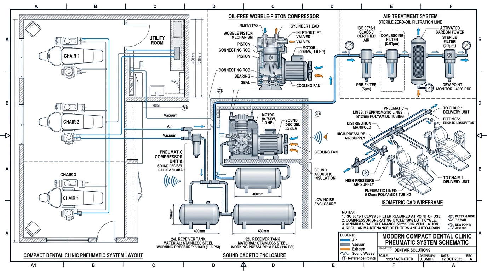
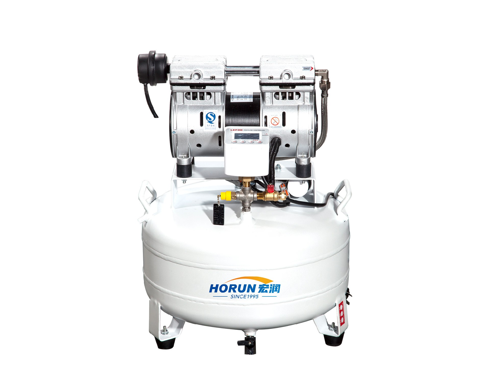
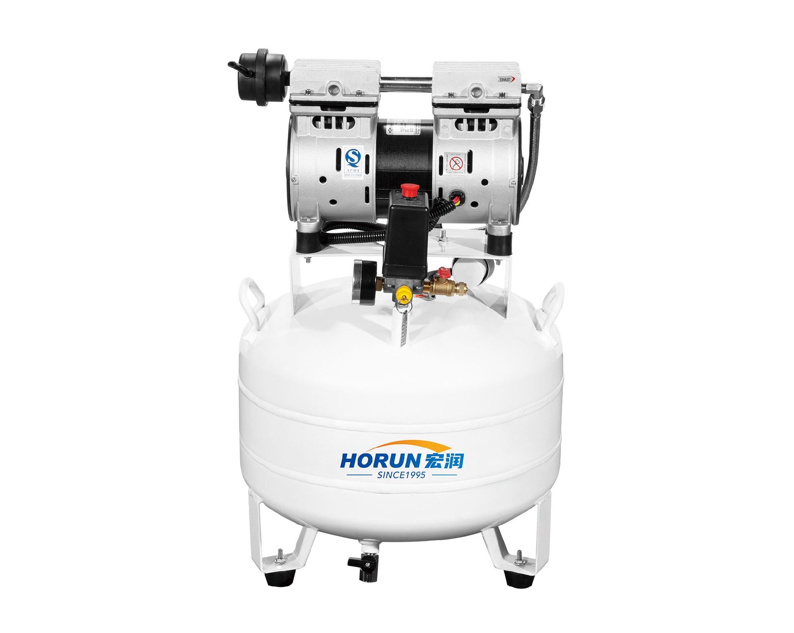

Compact 1–3 Dental Chair Operatory Pneumatic Flow, Under-Counter Cabinet Acoustic Isolation (≤55 dBA), and Receiver Tank Sizing
Executive Engineering Summary & Commercial Takeaways
- Precise Flow Sizing ($k$ Factors): Solo operatory ($k=1.0$) requires $\approx 50\text{--}60\text{ L/min}$; 2 chairs ($k=0.85$) require $\approx 90\text{--}100\text{ L/min}$; 3 chairs ($k=0.72$) require $\approx 125\text{--}140\text{ L/min}$ at $5.5\text{ bar}$.
- Low-Profile Receiver Form Factor: The 24L horizontal low-profile tank ($H \le 520\text{ mm}$) and official 32L horizontal tank ($H \le 580\text{ mm}$) allow zero-footprint under-counter installation inside standard treatment cabinetry.
- 32L vs. 24L Cycling Advantage: Upgrading from 24L to 32L provides 33.3% more buffer storage, reducing motor start/stop cycle frequency by 25% and extending PTFE piston ring lifespan past 25,000 hours.
- Acoustic Decibel Mastery ($\le 55\text{ dB(A)}$): 1400 RPM 4-pole low-speed motors and dynamic counterweights eliminate structural resonance, enabling quiet in-operatory placement without disturbing patients.
Picture this: You are halfway through a critical crown preparation or implant placement. Suddenly, your high-speed turbine bogs down, sputtering with a loss of torque. Seconds later, a deafening 75 dB(A) industrial roar reverberates through the operatory wall, startling your anxious patient. Even worse, microscopic moisture spits from your 3-way syringe onto freshly etched enamel, silently ruining your composite resin bond.
Why do over 65% of boutique dental clinics suffer from compressor failure within their first 24 months? Because they fell into the "nominal wattage trap" or compromised on an uncertified hardware store compressor. Here is the definitive engineering guide to doing it right.
1. The Small Dental Practice Dilemma: Spatial Footprint, Acoustics, and Flow Demands
In private boutique dental practices, urban dental clinics, orthodontics suites, and specialized endodontic offices with 1 to 3 dental treatment chairs, space optimization and acoustic comfort represent primary architectural challenges. Unlike large hospital dental departments that possess dedicated basement pneumatic plant rooms, compact clinics frequently lack remote mechanical utility spaces.
Consequently, the medical air compressor must often reside directly inside the treatment room, adjacent to the sterilization nook, or concealed within standard operatory under-counter cabinetry ($600\text{ mm}$ depth $\times 600\text{ mm}$ height). This spatial constraint imposes four strict engineering prerequisites on the compressor unit:
Low-Profile Height
Overall unit height must remain $\le 550\text{--}580\text{ mm}$ to slide smoothly beneath standard medical cabinetry worktops.
Whisper Quiet (≤55 dBA)
Noise emissions cannot exceed normal conversational sound pressure ($55\text{--}58\text{ dB(A)}$) to prevent patient anxiety.
100% Zero-Oil Purity
ISO 8573-1 Class 0 certified zero hydrocarbon vapor to prevent bonding failure in composite resin restorations.
Thermal & Cycle Stability
Adequate receiver storage buffer prevents short-cycling (motor starts/hour) and overheating in enclosed cabinet spaces.
2. The 60-Second Dental Air Math: Why Simple Watts Lie to You
A frequent error made by clinic owners and non-technical buyers is sizing a compressor solely by its motor horsepower (e.g., "0.75 kW is always enough for 2 chairs"). In clinical pneumatic engineering, compressor selection is dictated by Free Air Delivery (FAD @ 5.0–5.5 bar) matched against the Simultaneous Duty Factor ($k$) of specific clinical instruments:
Table 1.0: Simultaneous Utilization Factor ($k$) and Flow Requirements for 1–3 Chairs
| Clinic Scale | Active Chairs ($N$) | Simultaneous Factor ($k$) | Peak Air Demand (@ 5.0 bar) | Recommended Hongrun Model | Standard Tank Form Factor |
|---|---|---|---|---|---|
| Solo Operatory / Private Suite | 1 Chair | 1.00 (100%) | 50 – 60 L/min | HY-100 (0.55 kW) | 24L Horizontal Low-Profile ($H=515\text{ mm}$) |
| Standard Dual-Chair Clinic | 2 Chairs | 0.80 – 0.85 | 85 – 100 L/min | HY-200 (0.75 kW) | Official 32L Horizontal ($H=575\text{ mm}$) |
| Busy 2–3 Chairs / Heavy Prophy | 2 – 3 Chairs | 0.70 – 0.75 | 125 – 145 L/min | HY-300 (1.1 kW) | 50L Vertical Slim Cylinder ($D=400\text{ mm}$) |
| 3 Chairs + High Redundancy | 3 Chairs | 0.70 | 140 – 160 L/min | HYTG-300 (2.2 kW) | 90L Horizontal Dual-Pump Parallel Skid |
3. Product Deep-Dive: HY-100 (24L) vs. HY-200 (32L) Engineering Comparison
The core decision for small clinic operators is choosing between the HY-100 (0.55 kW) with a 24L low-profile horizontal receiver and the HY-200 (0.75 kW) with Hongrun's latest official upgraded 32L horizontal receiver. While both units utilize Hongrun's patented wobble-piston architecture and Saint-Gobain self-lubricating PTFE sealing rings, their thermodynamic and pneumatic cycle behaviors differ significantly under clinical load:

Solo Operatory SpecialistHongrun HY-100 (0.55 kW / 0.75 HP)
24L Horizontal Low-Profile Tank · Transport Handle & Wheels
- Displacement / Flow Rate: 100 L/min (FAD ~65 L/min @ 5 bar)
- Receiver Volume: 24 Liters (Horizontal Low-Profile)
- Acoustic Noise Level: ≤ 55 dB(A) (Whisper Quiet)
- Physical Dimensions ($L \times W \times H$): 540 × 300 × 515 mm
- Net Weight / Portability: 22.5 kg (Integrated Handle)

Dual-Chair Standard BenchmarkHongrun HY-200 (0.75 kW / 1.0 HP)
Official 32L Upgraded Receiver · Enhanced ZB200 Pump Head
- Displacement / Flow Rate: 150 L/min (FAD ~105 L/min @ 5 bar)
- Receiver Volume: 32 Liters (+33% Buffer Storage)
- Acoustic Noise Level: ≤ 58 dB(A) (Ultra Quiet)
- Physical Dimensions ($L \times W \times H$): 600 × 340 × 575 mm
- Net Weight: 28.0 kg (Heavy-Duty Base)
4. The Thermodynamics of Receiver Sizing: Why 32L Beats 24L for 2 Chairs
In dental clinic sizing, the air receiver vessel is not simply a passive holding vessel; it functions as a dynamic thermodynamic heat-exchanger and motor cycle-limiter. The relationship between receiver volume ($V$), motor cycle frequency ($Z$ starts/hour), and system pressure differential ($\Delta P = P_{\text{cut-in}} - P_{\text{cut-out}}$) is dictated by compressor thermodynamic laws:
When an undersized 24L tank is paired with 2 active chairs, the compressor is forced to start and stop every 2.5 minutes. This frequent cycling generates three destructive side effects:
- Excessive Inrush Current & Heat: Starting current spikes to 4–5× nominal running amperage, overheating the stator windings and reducing motor insulation life.
- Moisture Carryover: Compressed air does not remain in the receiver long enough to cool below dew point and condense out, resulting in liquid water passing into the dental handpiece air lines.
- Accelerated PTFE Wear: Frequent starts under pressure cause frictional micro-shearing on the piston cup lip before thermal equilibrium is established.
5. Spatial Layout: Under-Counter Cabinet Installation and Acoustic Ventilation
To seamlessly integrate an HY-100 or HY-200 inside an operatory cabinet, the clinic design must adhere to three critical installation clearances:
Provide at least $\ge 150\text{ cm}^2$ free louvre intake at the bottom and an exhaust vent at the cabinet top to prevent hot air recirculation ($T_{\text{ambient}} < 40^\circ\text{C}$).
Maintain a minimum of $50\text{ mm}$ clearance on all sides of the receiver tank and $80\text{ mm}$ behind the cooling fan shroud to ensure unrestricted intake airflow.
Route the $6\text{ mm}$ nylon condensate drain line directly to the clinic waste drain via a dedicated air gap or trap to avoid manual bucket emptying.
6. Commercial B2B Sales Playbook & Objection Handling Guide
For international medical distributors, sales engineers, and customer service teams, answering client inquiries with technical precision builds unmatched credibility and accelerates sales cycles. Below is the official Hongrun B2B Objection Handling Playbook:
Q1 "Why shouldn't I just buy a cheap commercial oil-free air compressor from a local hardware store for my clinic?"
Engineering Answer: Hardware store compressors run at high speeds (2800 RPM), producing deafening noise ($75\text{--}82\text{ dB(A)}$) and extreme heat that degrades low-grade rubber seals within 500–800 hours. Furthermore, their uncoated steel tanks rust internally, shedding iron oxide flakes directly into your $\$1,500$ dental handpiece turbines, destroying the ceramic bearings.
Commercial Selling Point: Hongrun HY Series compressors are NMPA Class II Medical Certified and ISO 8573-1 Class 0 certified. They feature 1400 RPM 4-pole low-speed motors, Saint-Gobain self-lubricating PTFE rings ($25,000\text{+ hr}$ design life), and nano-silver antibacterial tank linings that completely eliminate rust sludge.
Q2 "I have 2 dental chairs now, but I might add a 3rd chair in 2 years. Should I buy HY-200 (32L) or HY-300 (50L)?"
Engineering Answer: If the 3rd chair will be used primarily for hygiene or consultations, the HY-200 (0.75 kW, 32L) can handle the load under normal staggered usage ($k=0.70$). However, if all 3 chairs perform simultaneous cavity preparations, air-polishing (sandblasting), and surgical crown seatings, air demand will reach $145\text{ L/min}$, which requires the HY-300 (1.1 kW ZB300 pump, 50L vertical tank).
Commercial Recommendation: Recommend the HY-300 with 50L vertical tank. Its vertical cylindrical shape requires the exact same floor footprint ($400 \times 400\text{ mm}$) as smaller horizontal units, but delivers 50% more air capacity, protecting the clinic against future equipment replacement costs.
Q3 "What routine maintenance does the HY-100 / HY-200 require?"
Maintenance Checklist:
- Daily: Automatic electronic solenoid valve automatically purges tank condensate. If equipped with manual drain, open drain valve for 5 seconds at the end of the day.
- Every 6 Months: Inspect and clean the external air intake filter sponge.
- Every 12 Months: Replace the intake HEPA filter element (takes <2 minutes, tool-free).
- Zero Lubricant: 100% oil-free design requires zero oil top-offs or oil filter changes ever.
小门诊、大讲究：1~3台牙椅气源如何精准避坑？
（24L矮罐 vs 32L静音机深度实测与选型指南）
小型口腔诊所的气源空间、声学与用气矛盾
在以 1 至 3 台牙科综合治疗台 为主的小型独立门诊、高端私人诊室、正畸专科室或社区口腔中心中，用气环境与拥有独立地下机房的大型三甲医院存在本质不同。由于缺乏专门的动力设备间，空压机往往只能就近安置在诊疗室内、清洗消毒间一角，或者直接嵌入安装在标准医疗操作台地柜（深度 600 mm × 高度 600 mm）内部。
这种极其严苛的物理环境，对医用空压机提出了四大刚性工程要求：
超矮卧式罐身结构
整机高度必须控制在 520–580 mm 以内，以便无障碍推入标准地柜内部，实现诊室空间的零占地隐藏式布局。
极致超静音声学控制
运行噪音必须稳定在 ≤ 55–58 dB(A)（相当于日常轻声交谈），杜绝机械轰鸣对就诊患者造成紧张与心理焦虑。
ISO 8573-1 Class 0 零油纯度
彻底杜绝油雾挥发，防止光固化树脂粘结剪切力下降（避免充填体早期脱落），保护单支数千元的 40 万转高速手机轴承。
优化的储气缓冲容积
拒绝过小储气罐导致的频繁启停短周期循环（避免电机电容过热烧毁），确保高频洁牙与备牙时的持续气压稳定。
1~3 台牙椅临床用气量精确计算公式
许多非技术背景的门诊管理者常陷入“按功率瓦数粗糙估算”的误区（例如误以为 0.75kW 肯定够 2 台牙椅）。在医用气动工程学中，气源必须根据终端器械的 动态有效耗气量 与 同时使用系数（k 值） 进行严谨核算：
基于上述公式，各规模门诊的最低排气量与选型对比如下表所示：
| 门诊规模 | 牙椅数量 | 同时使用系数 (k) | 高峰气量需求 (@ 0.5 MPa) | 推荐宏润主力机型 | 标配储气罐规格 |
|---|---|---|---|---|---|
| 单椅独立门诊 / VIP 诊室 | 1 台 | 1.00 (100%) | 50 ～ 60 L/min | HY-100 (0.55 kW) | 24L 卧式矮罐 (高度 515 mm) |
| 标准双椅门诊 (主诊 + 洁牙) | 2 台 | 0.80 ～ 0.85 | 85 ～ 100 L/min | HY-200 (0.75 kW) | 官方升级 32L 卧式储气罐 |
| 2~3 台繁忙门诊 / 紧凑占地 | 2 ～ 3 台 | 0.70 ～ 0.75 | 125 ～ 145 L/min | HY-300 (1.1 kW) | 50L 立式圆柱罐 (省占地) |
HY-100 (24L) 与 HY-200 (32L) 核心参数深度实测对比
对于 1~2 台牙椅的门诊，选型焦点高度集中在 HY-100（0.55 kW，24L 卧式矮罐） 与 HY-200（0.75 kW，官方升级 32L 卧式储气罐）。两者均采用宏润专利一体式摆动活塞机头与法国圣戈班耐磨自润滑特氟龙环，但在热力学和气动负荷承载力上存在清晰的分工：
HY-100（0.55 kW · 24L 卧式矮罐）
带便携拉手与静音脚轮 · 极致低矮重心
- 理论排气量： 100 L/min (有效供气 ~65 L/min)
- 储气罐容积： 24 升 卧式圆柱矮罐
- 运行噪音： ≤ 55 dB(A) (极度静音)
- 外形尺寸 (长×宽×高)： 540 × 300 × 515 mm
- 整机净重： 22.5 kg
HY-200（0.75 kW · 32L 升级卧式罐）
官方升级 32L 储气罐 (+33% 缓冲容积) · 强化 ZB200 机头
- 理论排气量： 150 L/min (有效供气 ~105 L/min)
- 储气罐容积： 32 升 官方升级大缓冲罐
- 运行噪音： ≤ 58 dB(A) (超静音)
- 外形尺寸 (长×宽×高)： 600 × 340 × 575 mm
- 整机净重： 28.0 kg
为什么 2 台牙椅强烈推荐 32L 卧式储气罐？
宏润将 HY-200 的标配储气罐由行业常见的 24L 升级为 32L（容积提升 33.3%），这绝非简单的“多装几升气”，而是基于严格的热力学与机械寿命考量：控制电机的每小时启停频次（Cycle Frequency Z）。
当 2 台牙椅同时工作时，如果仅配备 24L 小储气罐，空压机每 2~3 分钟就必须启停一次，一小时启停高达 22 ～ 28 次。这种频繁启停会带来三大致命隐患：
电机启动瞬时电流高达额定电流的 4~5 倍，极易引起定子绕组过热跳闸，启动电容加速老化失效。
气体在罐内滞留冷却时间不足，高温湿热空气直接进入牙椅气路，导致手机气管内壁积水并喷水。
在背压未完全释放时频繁启动，特氟龙皮碗承受剧烈剪切力，使用寿命从 2.5 万小时锐减至数千小时。
而升级为 32L 储气罐 后，在双椅高频工况下，每小时启停次数被严密压制在 ≤ 12 次/小时 黄金安全区间，既保证了气压平稳输出，又大幅延长了电机与活塞密封系统的综合寿命。
地柜嵌入式安装与声学散热实操要点
将 HY-100 或 HY-200 嵌入安装于医疗地柜内部时，请务必监督装修施工方落实以下三项工程规范：
-
形成对流通风道： 地柜底部必须开凿不小于 150 cm² 的进风百叶窗，柜体上方或侧面设置排风口，确保柜内环境温度不超过 40°C。
-
预留安全散热间隙： 空压机储气罐四周应保留 ≥ 50 mm 间距，风扇罩后方保留 ≥ 80 mm 进气间隙，严禁杂物堆压阻挡进气。
-
自动排水管引出： 标配的 6mm 尼龙排水管应直接引出地柜接入地漏或下水管，免除人工频繁弯腰倒水的维护负担。
业务销售与客户答疑实战指南（避坑话术宝典）
“门诊刚开业预算紧张，去五金机电城买一台几百块钱的无油工业空压机行不行？”
技术底牌： 工业级无油机多为 2800 转超高速电机，噪音高达 75~82 分贝，放在诊室内如同拖拉机，患者根本无法接受；更严重的是，工业机储气罐内壁没有医用防腐防锈涂层，使用 3 个月就会产生大量铁锈粉末，直接卡死并报废单支上千元的牙科手机陶瓷轴承。
销售成交话术： “宏润 HY 系列持有国家二类医疗器械注册证 (NMPA Class II) 和 ISO 8573-1 Class 0 零油认证，1400 转低速静音电机，内壁经过纳米银离子抗菌防锈处理。看似贵了几百块，但能保护好几万的牙科手机免受损坏，且符合卫健委院感检查标准，这是最划算的投资。”
“我现在只有 1 台牙椅，但 1~2 年内打算扩充第 2 台，我该选 HY-100 还是 HY-200？”
专业建议： 强烈推荐直接选择 HY-200（32L 卧式储气罐）。
销售说辞： “单台牙椅使用 HY-200 时，由于 32L 储气罐缓冲充足，空压机一天可能只启动几次，运行极度省电、极其安静；等您明年增加第 2 台牙椅时，直接接上气管即可无缝升级，不需要重新花钱换主机，彻底避免设备淘汰的二次重复开支。”
“日常维护麻不麻烦？护士能不能自己搞定？”
极简维护清单：
- 每日： 标配电子自动排水阀每天自动排干冷凝水，无需人工手动倒水；
- 每半年： 取下进气消音器外壳，清水冲洗进气过滤海绵即可；
- 每 12 个月： 旋转拧下进气滤芯更换新滤芯（免工具，2分钟由护士轻松搞定）；
- 终身免机油： 100% 零油设计，终身不需要添加任何润滑油或更换机油滤芯。
Interconnected Deep-Dive Whitepapers:
Engineering Zero-Oil Purity & ISO 8573-1 Class 0 Standards
Wobble-piston kinematics, PTFE tribology, and multi-operatory air sizing.
15–50 Dental Chairs Pneumatic Pipe Sizing & Hospital Blueprint
Simultaneous flow calculations (k=0.70), ring-main pipe sizing, and plant room CAD.
3D CAD Exploded Engineering Anatomy of Class 0 Compressors
5-axis CNC drive shafts, diamond-coated PTFE rings, and dual-tower PSA dryers.